隧道开挖的刚性块体模型
| 算例资源 | |
|---|---|
| 数据文件（Data Files） | 项目： 打开“TunnelBBM.prj”[1]（在 PFC3D 中） |
问题描述
本例模拟深部高应力环境中的隧道开挖，与 [Garza-Cruz2014] 中给出的案例研究类似。在初始的零孔隙率黏结块体模型（BBM）中施加应力，使其与 1200 m 深度处的隧道相符，该深度处侧向应力大于上覆应力。接触模型选用 软黏结模型（Soft-Bond Model），该模型同时给出岩体的弹性响应与破坏响应。刚性块体沿隧道推进方向布置于周期性空间中。此外，块体与 FLAC3D 网格单元耦合，以在远离开挖区域处形成弹性边界。应力初始化后，通过用裂隙切割刚性块体来形成隧道。计算被切割块体上的不平衡力，将其存储并施加到隧道墙面上。随后对这些力进行松弛，以模拟隧道推进。在松弛的各个阶段均计算破碎块体。黏结最初在隧道表面附近的拉伸与剪切作用下发生断裂，但不会继续扩展。剪切破坏出现在隧道角部和隧道顶部附近，拉伸破坏则主要出现在侧墙附近。在更高的松弛水平下，可以观察到隧道上方和下方出现显著的剪切破坏，开挖周围各区域间杂有拉伸破坏。
几何创建
rblock construct 命令用于在平行六面体域内创建刚性块体。生成的四面体构成岩体的零孔隙率表示，具有指定的最大边长，并与平行六面体的边界相符。在此类 BBM 模型中，采用 Voronoi 镶嵌可能更有利，因为创建刚性块体所用的算法会引入连贯的、预先存在的破坏面，这些破坏面跨越多个相邻块体，如下图所示。通过为整个模型中的接触指定强度分布，可以在一定程度上缓解这一情况；本例即采用了这种做法。
隧道几何形状由圆柱体与平行六面体盒体组合而成。因此，需要进行一定的处理，才能使切割仅发生在隧道边缘处的块体上。几何多边形以裂隙的形式导入，并使用 rblock cut 命令切割刚性块体。throughgoing 关键字规定：只要裂隙与刚性块体的任何部分相交，该块体就被切割；而 intersects-box 关键字规定：只有与某个盒体相交的刚性块体才被纳入切割考虑。借助这些附加关键字，可在隧道区域之外不产生额外切割的情况下完成切割。为被切割的块体指定分组名称，可将岩体中隧道的完整墙体定义出来，以便随后在隧道墙面上施加支护力时使用。隧道周边的被切割块体称为支护块体。
对于诸如此类的零孔隙率模型，可以预期，承担弹性响应的接触应位于相邻四面体的面之间，而非位于四面体的棱或顶点之间。对于非黏结接触，接触位置定义为重叠体积的形心。因此，为了使面-面接触能够被识别、并使接触位置位于面-面重叠区域的形心处，需对刚性块体进行缩放（见 rblock scale 命令）。若模型在此状态下已经黏结，则会出现大量棱-棱接触和顶点-顶点接触，这些接触不贡献弹性响应，并会大大降低计算速度。为在模拟过程中有效去除这些接触，随后在保持面位置不变的情况下对刚性块体进行圆化处理（见 rblock erode 命令）。对刚性块体进行缩放和侵蚀的步骤对于高效的 BBM 模拟至关重要。

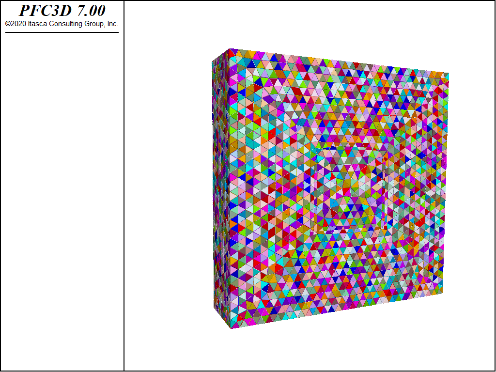
图 1：切割、缩放和侵蚀后的刚性块体初始配置。
应力初始化
在与刚性块体重叠的区域内创建、加密并连接网格单元。为了使用 初始化上覆应力单元命令（zone initialize-stresses overburden） 命令恰当地设置网格单元应力，各网格单元必须相互连续。为此，与刚性块体重叠的区域最初为弹性。一旦网格单元中的应力完成初始化，重叠区域内的网格单元即被赋予 null 本构模型，弹性区域边界处的网格单元面则通过 wall-zone create 命令用墙包裹（见下图）。保留这些被置空的网格单元，以便能够使用 初始化上覆应力单元命令（zone initialize-stresses overburden） 命令再次设置网格单元应力，从而使初始应力状态接近目标应力状态。接触力使用 contact.force.from.stress 内置函数设置。请注意，设置接触力时采用了经验推导的系数。由于接触方向可变，且每个刚性块体或墙面片上的接触数目不同，这些接触力无法保证处于平衡状态。负间隙的接触被抑制，这意味着其位置不会更新，并且在持续被抑制期间无法变为活动状态。随后将网格单元应力重新赋予目标值，并对模型进行若干次平衡，以更接近目标初始应力状态。以下各图给出了网格单元中的目标 xx-、yy- 与 zz- 应力及最终值

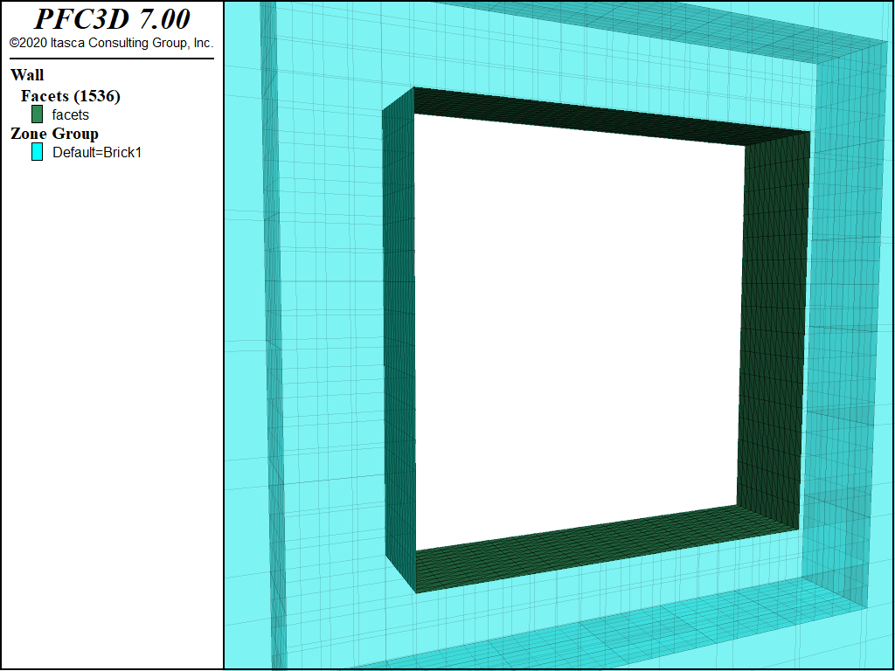
图 2：区域被墙面片包裹的网格单元。

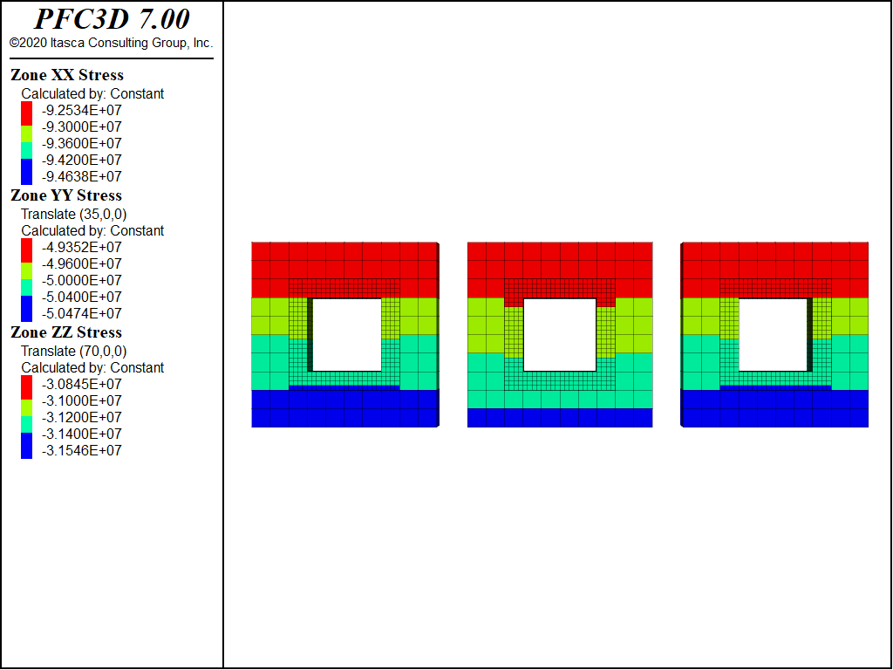
图 3：网格单元中的初始 xx-、yy- 与 zz- 应力。

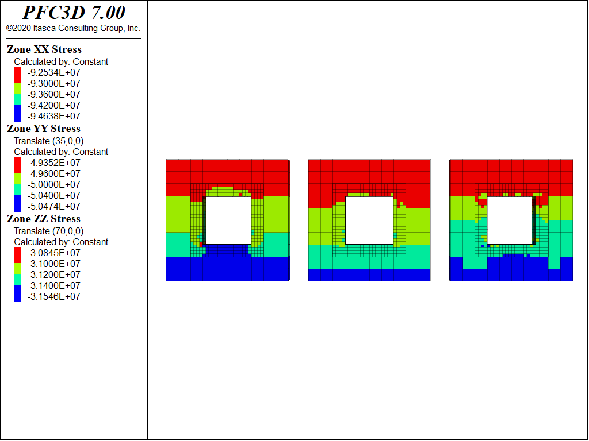
图 4：在置空区域中与块体平衡后，网格单元中的 xx-、yy- 与 zz- 应力。
隧道开挖
完成上述步骤后，删除隧道块体，固定支护块体，并对模型进行平衡。支护力（即维持隧道不塌落并接近平衡所需的力）按支护块体上不平衡力的相反数计算。这些支护力作为附加变量存储在每个支护块体中，并施加于支护块体。支护力将在后续模拟中逐渐减小。对所有 rblock-rblock 接触均指定抗拉强度与抗剪强度的正态分布。在此模型中，若某块体完全失去黏结，则与该刚性块体相关的所有接触的抑制状态被置为 false，使其能够成为活动接触。这样既能获得真实的大变形响应，又能降低计算开销。为了在释放支护力的同时使模型保持平衡，使用了 FISH halt 控制停止：仅当达到目标平均比率时，才继续减小支护力。在本例中，目标平均比率 5e-4 在某些情况下可能偏大。
模拟结果
以下各图给出了支护力分别减小至其初始值的 30%、5% 和 0% 时的位移量值。请注意从刚性块体到网格单元的位移连续性。只有当支护力释放至小于其初始值的 5% 后，隧道顶板与底板才出现显著位移。

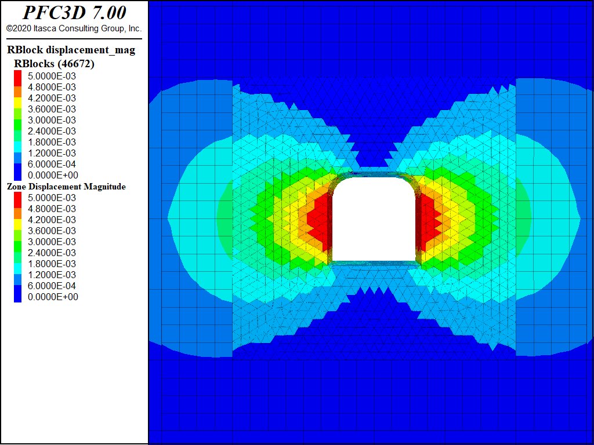
图 5：支护力为其初始值 30% 时的位移量值。

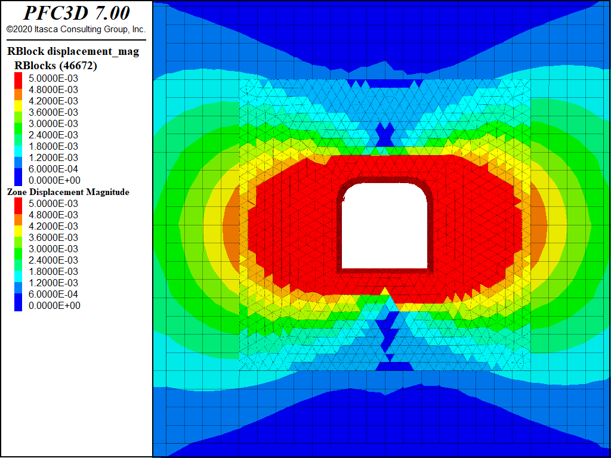
图 6：支护力为其初始值 5% 时的位移量值。

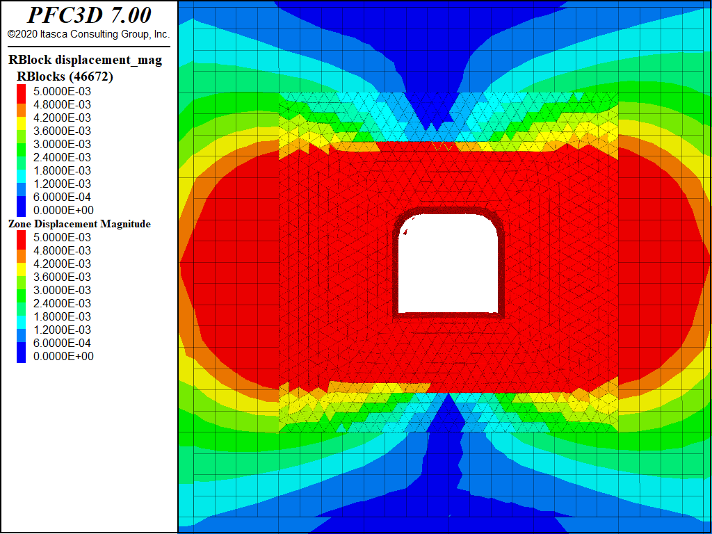
图 7：无支护力时的位移量值。
以下各图给出了支护力分别减小至其初始值的 30%、5% 和 0% 时的剪切裂纹与拉伸裂纹演化。裂纹作了平移显示，并给出了当前支护值占初始值百分比的历史。当支护力释放至其初始值的 30% 时，在隧道底板角部附近以及顶板起拱部位附近可观察到剪切裂纹。支护力为 5% 时，隧道上方与下方明显发育剪切裂纹。同时还存在拉伸裂纹，隧道边墙附近另出现一些拉伸裂纹。无支护力时，隧道上方与下方直至约一个隧道半径范围内可清晰看到拱形裂纹。沿隧道边墙发育的裂纹较少。

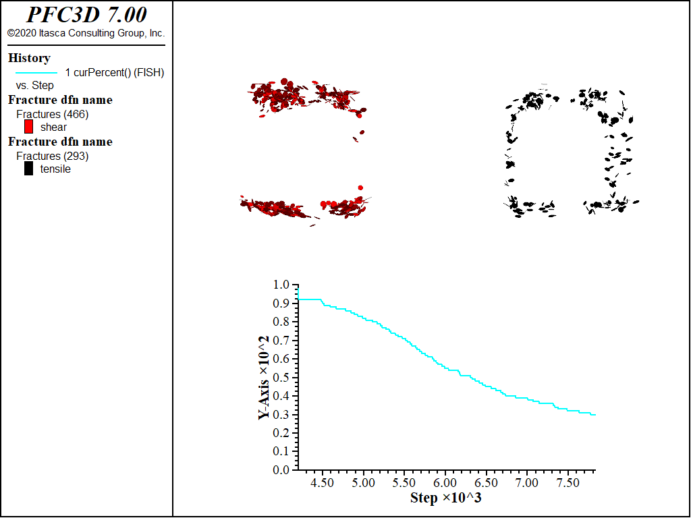
图 8：支护力为其初始值 30% 时的剪切裂纹（红色）与拉伸裂纹（黑色）。

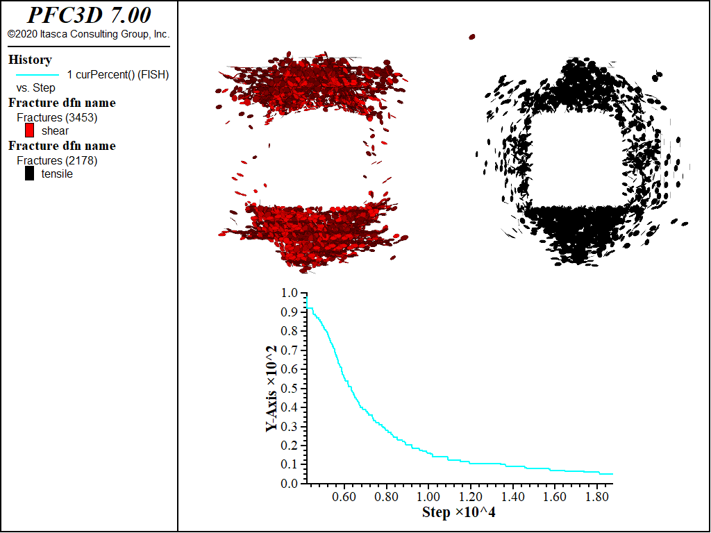
图 9：支护力为其初始值 5% 时的剪切裂纹（红色）与拉伸裂纹（黑色）。

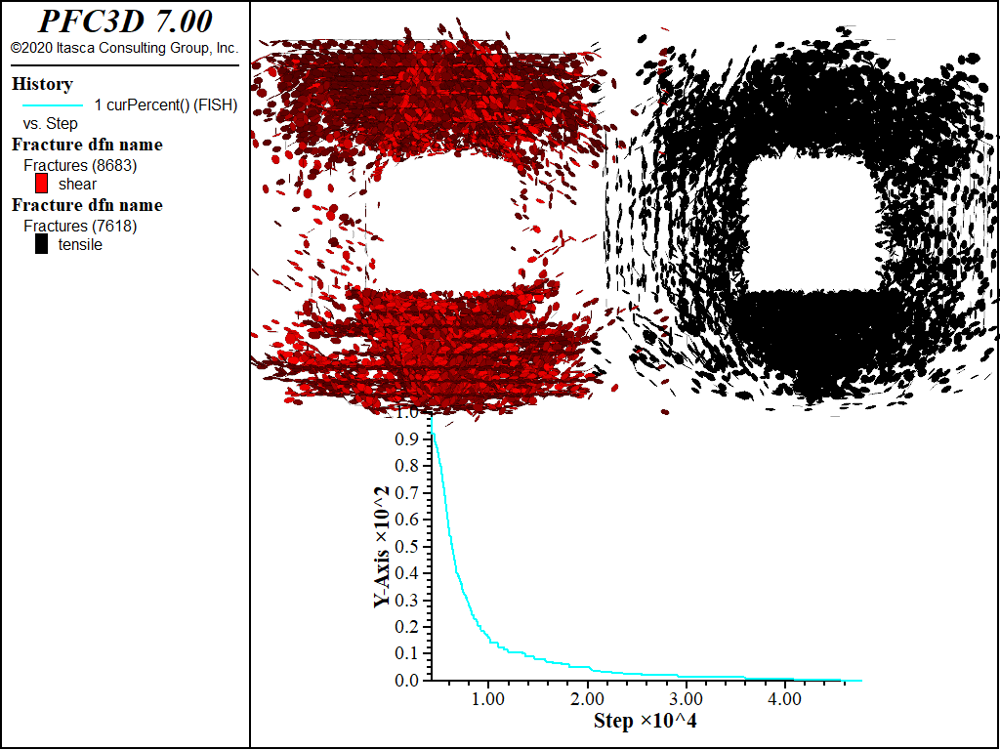
图 10：无支护力时的剪切裂纹（红色）与拉伸裂纹（黑色）。
最后，以下各图给出了支护力分别减小至其初始值的 30%、5% 和 0% 时的破碎块体。可以看到，破碎块体首先在隧道上方与下方发育，随后随着损伤增加，破碎区域在横向上扩展至隧道轮廓投影范围之外。

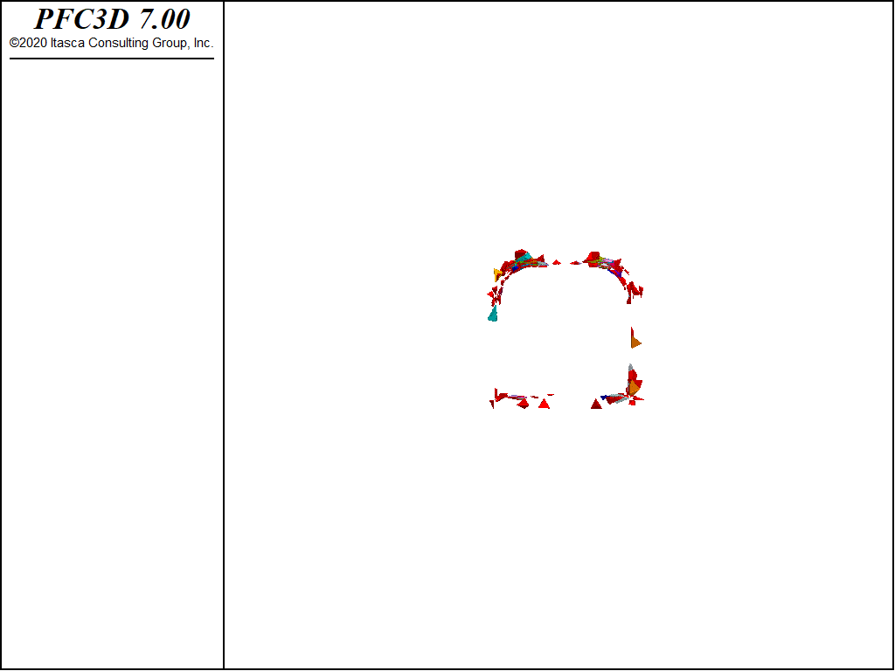
图 11：支护力为其初始值 30% 时的破碎块体。

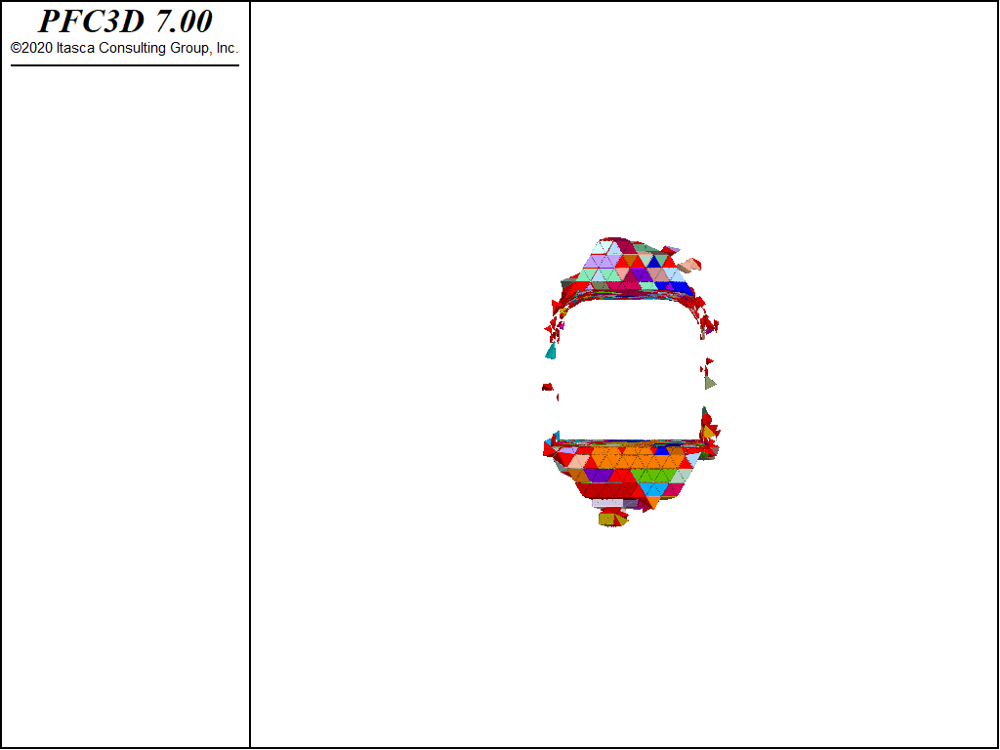
图 12：支护力为其初始值 5% 时的破碎块体。

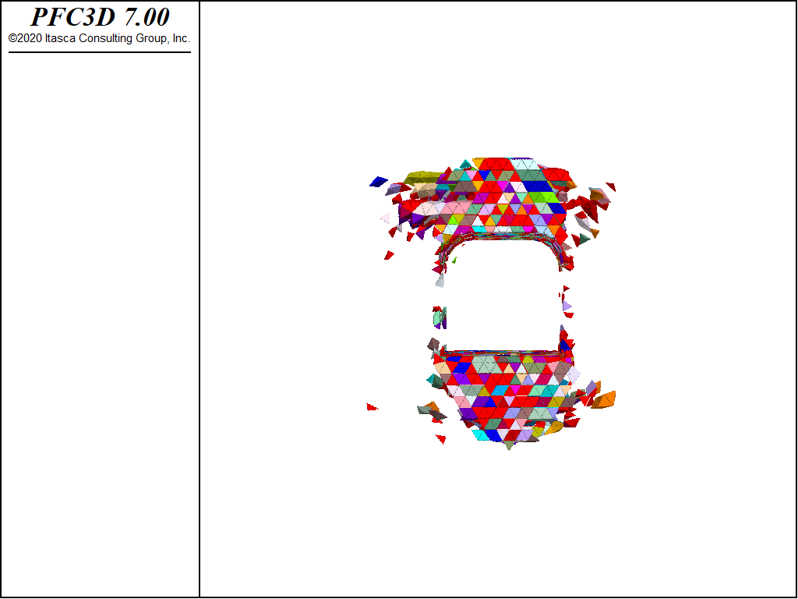
图 13：无支护力时的破碎块体。
参考文献
| [Garza-Cruz2014] | Garza-Cruz, T. and Pierce, M.，《重度脉状块状岩体的 3DEC 模型》（A 3DEC Model for Heavily Veined Massive Rock Masses），载于《第 48 届美国岩石力学研讨会论文集》（Proceedings of the 48th US Rock Mechanics Symposium），ARMA 14-7600，美国明尼苏达州明尼阿波利斯，2014 年。 |
尾注
| [1] | 这些文件可在 PFC3D 的 示例 对话框下的“examples/tunnelbbm”文件夹中找到（菜单路径为 ）。若未出现该条目，请将应用数据复制到新目录。（使用菜单命令 。详见“复制应用数据（Copy Application Data）”一节。） |
注意
本示例的项目文件可在 PFC.[1] The data files used are shown at the end of this example.
| 这些内容对您有帮助吗？… 版权与免责声明 | FLAC3D © 2019, Itasca | 原文更新于 2020 年 10 月 8 日 |